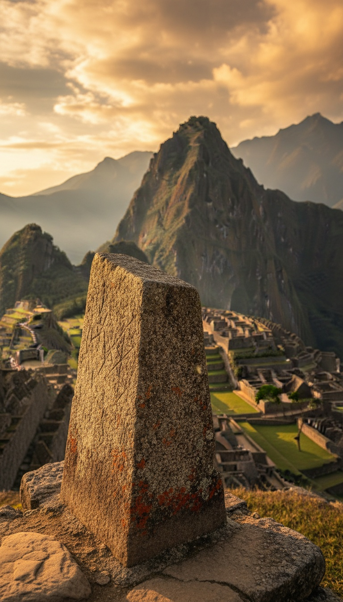

Machu Picchu's carved stone held the sun on its path for five centuries, and on September 8, 2000, a beer commercial knocked a piece off the top.
The Inca called stones like this one a place to tie the sun. The Spanish crown sent a viceroy to smash every one of them it could find. This one stood untouched through the conquest, through four hundred years of jungle, and through the arrival of an American explorer with a camera. Then a film crew working for a brewery swung a crane over it, and the stone lost its tip.

The Hitching Post of the Sun
The stone is called the Intihuatana. In Quechua, inti means sun and huata means to tie or hitch. Put together, the name means the place where the sun is tied down.
It sits at the top of a terraced granite hill on the western side of Machu Picchu, above the Sacred Plaza, beside the Temple of the Three Windows and the Principal Temple. To reach it you climb a staircase of more than seventy steps. The Inca put it at the highest built point of the city's ritual sector, and that placement was deliberate.
The Inca emperor Pachacuti ordered Machu Picchu built around 1450. The city's most important ritual object went at its highest point, closest to the sky it was built to work on.
A Machine Cut From the Living Rock
The Intihuatana was never hauled up the mountain. The Inca carved it straight out of the bedrock of the hilltop, so the stone and the mountain are one piece of granite. The mountain itself became the instrument.
Look at the geometry and it reads like a machine. A vertical post rises from a carved base. Its four corners line up with the four cardinal directions. Its planes and angles face the peaks around it: Huayna Picchu to the north, and the sacred mountains the Inca called apus on the horizon.
Here is what the stone does. Near the equinoxes, in March and September, the noon sun stands almost directly over the Intihuatana and the post casts almost no shadow. For a moment the sun looks pinned in place over the stone, held there and stopped.
The Inca had no written script. They kept records on knotted cords called khipu, and nobody alive today can fully read them. So the Intihuatana is the only surviving record of what this machine did and how it was operated. The stone is the instruction manual.
Four centuries of conquest, earthquakes and jungle never touched the stone. One camera crew chasing a beer commercial broke it in an afternoon.
Why Viceroy Toledo Wanted Every One Destroyed
Francisco de Toledo arrived in Peru as viceroy in 1569, and he went after these stones on purpose.
Toledo ran the campaign the Spanish called the extirpation of idolatries. His men went valley to valley across the Andes and broke the huacas, the sacred stones and shrines the Inca priests worked with. The intihuatanas were top of the list. In 1572 Toledo's forces captured and executed Túpac Amaru, the last Inca ruler at Vilcabamba, in the main square of Cusco. The man and the stones fell to the same campaign.
Look at what the Spanish feared. The colonial chroniclers wrote down what the Andean people told them: the priests used these stones to hold the sun on its course and keep the seasons turning. A Spanish administrator does not send soldiers across the mountains to smash a sundial. He sends them to break a tool that the people he conquered believed could command the sky.
Toledo got the intihuatanas he could reach. Some survive damaged at Písac and Ollantaytambo in the Sacred Valley. The one at Machu Picchu survived whole, because the Spanish never found the city. No conquistador chronicle describes it. No Toledo work order names it. The most important astronomical stone in the Inca world sat hidden on its ridge while the rest were broken.
The Stone That Outlived the Conquest
On July 24, 1911, Yale lecturer Hiram Bingham climbed to Machu Picchu, guided by a local farmer named Melchor Arteaga and a Peruvian police sergeant named Carrasco. Local farming families were already living on the terraces. Bingham brought the cameras and the international press.
Bingham photographed the Intihuatana standing intact, with its post sharp and its corners clean, roughly four hundred years after Toledo's men had broken its sisters. His 1911 and 1912 photographs ran in National Geographic in April 1913. They are the baseline. They show the stone the way the Inca left it.
Bingham shipped thousands of objects from the site back to the Yale Peabody Museum in New Haven, Connecticut. Peru fought to get them back for almost a century. Yale began returning the collection in 2011, and it now sits in the Museo Machu Picchu at the Casa Concha in Cusco. The Intihuatana never left. It had always belonged to the mountain.
September 8, 2000
On September 8, 2000, a crew working for the Peruvian advertising agency J. Walter Thompson was filming a commercial for Cusqueña, a beer brewed by Backus y Johnston, inside Machu Picchu.
They brought a crane up to the Intihuatana to get the shot. The arm of the crane fell onto the stone and sheared a chip off the top of the carved post. Peru's Instituto Nacional de Cultura, the agency responsible for the site, opened an investigation. Archaeologists in Cusco called it one of the worst injuries the sanctuary had ever taken. The case went to court, and Machu Picchu's staff started counting what the tourist economy was costing the stones.
Stack the facts. The Spanish empire spent decades breaking huacas across the Andes and never touched this one. Five hundred years of Andean earthquakes left it standing. A crew had a permit to film there, and it put a chip in the top in one afternoon.
The chip came off the post, the exact point that aims the stone at the sun. A blow to the base would have left a scar. This blow took a piece of the instrument.
Calendars Do Not Tie Down the Sun
The tour guides at Machu Picchu call the Intihuatana an astronomical calendar, a clock in granite for timing the planting and the harvest. That label breaks on its own name.
The Inca already had calendar tools that worked. Around Cusco they built towers on the horizon called sucanca to mark the solstices for planting. They tracked the year with the Pleiades, which they called Qollqa, the storehouse. Telling the date did not require carving the highest point of a hidden city into a pinned post. They carved it to do something else.
Tying is an action you take. It means you want something to stay where it is. The people who built this stone gave it a name that says it holds the sun, and the Spanish who conquered them believed that name enough to send soldiers after every copy.
And every winter solstice in June, at Inti Raymi, Andean priests in Cusco still call the sun back from its farthest point. That ceremony survived the conquest too.
So here is what we know. The one intihuatana the empire never found was the one built at the highest point of the city built to hide it. It stood whole for four hundred years. Then the twentieth century arrived with a crane, and the post that held the sun lost its tip.
Nobody has explained why the Inca hid the most important stone in their world on a ridge the Spanish could never find. And nobody can say what the priests at the other intihuatanas were doing when Toledo's men came for them. The question that keeps me up is a different one. If the stone really tied the sun in place, what came loose on September 8, 2000? Tell me in the comments what you think the Inca were holding down.
Before you go
7 books the Vatican doesn't want you reading. Free PDF — the texts they cut, with sources. Joined by 140+ Inner Circle members.
No spam. Unsubscribe anytime.
Go deeper
The Hidden Canon, Vol. I — Enoch. Jubilees. Thomas. Mary. Judas. 90 pages, 14 chapters, every receipt cited. The books your Bible quietly removed.
Read the Canon →Books that informed this investigation
As an Amazon Associate, Hidden Epoch earns from qualifying purchases. Cost to you: nothing.
Research safely
The VPN we use to research without being tracked. First 3 months free.
Get NordVPN →